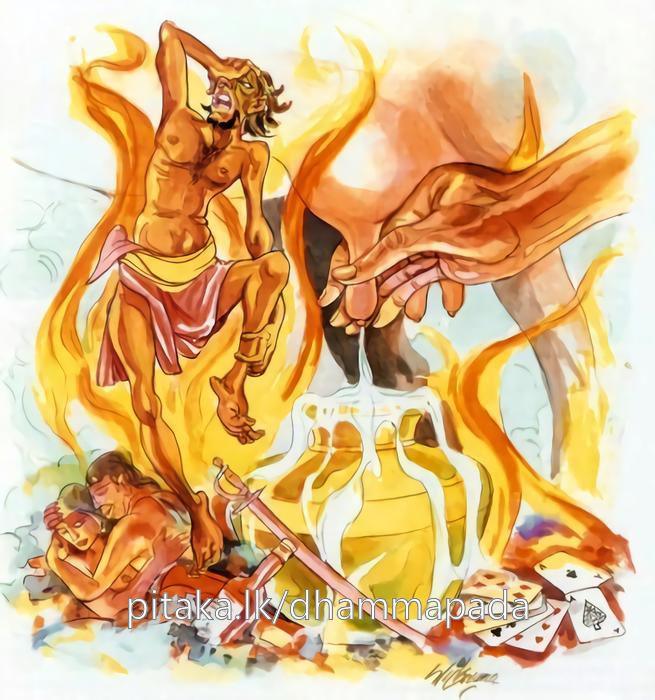

5-12 දොළොස්වන අභිප්රේත වස්තුවයි.
මෙම කතාව සද්ධර්ම සාගරයෙන් ද කියවන්න.
න හි පාපං කතං කම්මං සජ්ජු ඛීරං’ව මුච්චති
ඩහන්තං බාලමන්වෙති භස්මච්ඡන්නො’ව පාවකො.
අකුශල කම්මය කළ සත්තවයාහට එය කළ ඇසිල්ලෙහි ම දෙනගේ තනයෙන් දෝනා ලද කෙණෙහි ම මිදී නොයන කිරි මෙන් එ කෙණෙහි විපාක නො දෙන්නේ ය. හලුයෙන් වැසුනු සහලඟුරු රැසක් මෙන් ඒ පාපිය දවමින් ඔහු ලුහුබඳී.

නහි පාපං කතං කම්මං ආදි මේ ධර්මදේශනාව ශාස්තෘන්වහන්සේ වේළුවන විහාරයෙහි වාසයකරන කාලයේ එක්තරා සර්පප්රේතයකු අරභයා දෙසූසේක. දිනක් ජටිලයන් දහසක් වසන පර්වතප්රාන්තයෙක්හි ආයුෂ්මත් ලක්ඛණ තෙරණුවනුත් සමග මහමුගලන් තෙරණුවෝ රජගහනුවර සිඟා වඩින්නෙමුයි ගිජ්ඣකුටයෙන් බසිනවිට ආයුෂ්මත් මහමුගලන් තෙරණුවෝ එක් සර්පප්රේතයකු දැක සිනා පහළකළහ. ඉන්පසු ඒ දුටු ලක්ඛණ තෙරණුවෝ ඇවැත්නි කුමක් නිසා සිනාසුණෙහිදැයි සිනාවට කාරණා විචාළහ. ඇවැත්නි එය කීමට මේ සුදුසු කාලය නොවෙයි. බුදුන් හමුවට ගිය කල එය අසන්නැයි කීහ. උන්වහන්සේලා රාජගෘහයෙහි පිඬුසිඟා බුදුන් හමුවට ගොස් සිටිකල, ලක්ඛණ තෙරණුවෝ ඇවැත් මෞද්ගල්යානයෙනි, ඔබ ගිජ්ඣකූටයෙන් බසිනවිට සිනාසී සිනාවෙන්නේ ඇයිදැයි මා විමසූවිට එය බුදුන් හමුවෙහිදී අසන්නැයි කීවෙහිය. දැන් ඒ කාරණය කියනු මැනවයි දන්වා සිටියහ. ඇවැත්නි, මම එක් ප්රේතයෙක් දැක සිනාසුණෙමි. ඔහුට මෙබඳු ආත්මභාවයක්-සිරුරක්විය. ඔහුගේ හිස මිනිස් හිසකි. අනිත් ශරීරය සර්පයෙකුගේ මෙනි. අහිප්රේත නම්වූ මොහුගේ සිරුර ප්රමාණයෙන් පස්විසියොදුනක් පමණ දිගය. හිසෙන් නැගෙන ගිනිජාලාවෝ නගුටු කෙළවර දක්වා දිවෙත්. නගුටින් නැගෙන ජාලාවෝ හිස දක්වා දිවෙත්. මැදින් නැගෙන ජාලාවෝ දෙපස දවමින් දිවයති. දෙපසින් නැගෙන ගිනිදැල් පිටමැදින් නැගෙයි.
ප්රේතයන් දෙදෙනාගේම සිරුරු විසිපස් යොදුන් පමණය. සෙස්සන්ගේ තුන්ගවු පමණය. මේ අහිප්රේතයාගේත්, කාකප්රේතයාගේත් විසිපස්යොදුන් පමණවේ. ඔවුන් අතර මේ අභිප්රේතයායි. මහමුගලන් හිමියෝ කාකප්රේතයාද ගිජ්ඣකූටය මුදුනේ පැසෙන සැටි දැක ඔහුගේ පෙර කළ කම් විමසමින් මේ ගාථාව කීහ:
පස් යොදුන් දිවකුත්
නව යොදුන් පමණ හිසකුත්
පස්විසි යොදුන් පමණවූ
සිරුරක් ලබා සිටිනා
ඔබ කළ කිනම් පවකින්
මෙනම් දුකකට පැමිණියේදෝ
ඉන්පසු ප්රේතයා:
මහ මුගලන් හිමියනි
පෙර කසුප් බුදුන් සමයෙහි
සඟනට ගෙනා බත් දැක
කැමති සේ එය ගසාකෑවෙමි
ඒ කළ අකුසලෙන්
මෙවන් දුකකට පැමිණියෙමි
මෙසේ ගාථාව කියා, ස්වාමීනි, කාශ්යප බුදුන්සමයේ බොහෝ භික්ෂූහු ගමට පිඬුසිඟා වැඩියහ. මිනිස්සු තෙරවරුන් දැක ප්රියමනාප සිත් ඇතිව ආසනශාලාවෙහි වඩා හිඳුවා කැඳ වළඳවා ඛාද්යවර්ග පිළිගන්වා පා දොවා තෙල් ගල්වා පිණ්ඩපාත කාලය එනතුරු බණ අසමින් සිටියාහුය. ධර්ම කථා අවසානයෙහි තෙරවරුන්ගේ පාත්ර රැගෙන තමතමන්ගේ ගෙවල්වලින් නන්වැදෑරුම් අග්රරසයෙන් යුත් භෝජනවලින් පුරවා ගෙන ආහ. එකල මම කපුටෙක් වී ආසනශාලාවේ වහළය උඩ සැඟවී සිට ඒ ආහාර දැක එකෙක් ගෙන ආ ආහාර පාත්රයෙන් තෙවරක් මුව පුරා බත්පිඬු තුනක් ගතිමි. ඒ බත වනාහි සංඝයා සතු නොවෙයි. සංඝයාට නියමකොට දුන් දෙයක්ද නොවෙයි. භික්ෂූන් විසින් වළඳා ඉතිරිවූ තමතමන්ගේ ගෙවල්වලට ගෙනගොස් මිනිසුන් විසින් අනුභව කළ යුත්තකුදු නොවෙයි. හුදෙක් සංඝයා උදෙසා ගෙන ආවක් පමණි. මම එයින් පිඬු තුනක් පමණක් ගතිමි. මා පෙර කළ කර්මය මෙපමණකි. ඒ මම මිය පරලොව ගොස් ඒ කර්ම විපාකයෙන් අවීචියෙහි පැසී ඒ පැසීමේ අවසානයෙහි දැන් ගිජුකුළුපව්වෙහි කාකප්රේතයෙක්ව ඉපදී මෙසේ දුක් විඳින්නෙමියි කීය.
මේ කාකප්රේතයාගේ වස්තුවයි.
මෙහිදී මුගලන් තෙරණුවෝ අභිප්රේතයා දැක සිනා පහළකොළෝයයි කීහ. ඊළඟට ශාස්තෘන්වහන්සේ සාක්ෂි වශයෙන් සිට මහණෙනි මොග්ගල්ලාන කියන්නේ සැබෑවකි. මමත් මෙය බුදුවූ දිනයෙහිම දැක්කෙමි. එතෙකුදුවුවත්, මම එසේ කීවිට යමෙක් එය නොපිළිගතහොත් එය ඔවුන්ට අහිත පිණිස පවත්නේයයි අනුන්ගේ යහපත උදෙසා නොකීවෙමියි වදාළහ. ලක්ෂණසංයුක්තයෙහිද, මහමුගලන් තෙරුන් දුටු වේලෙහිම ශාස්තෘන්වහන්සේ සාක්ෂි වශයෙන් සිට විනීත වස්තු වදාළහ. මෙයද මුගලන් තෙරුන් විසින් එසේම කියනලද්ද අසා භික්ෂූහු ඒ ප්රේතයාගේ පූර්වකර්මයන් විචාළහ. බුදුහුද ඔවුන්ට එය පැහැදිලිකොට දුන්හ.
අතීතයෙහි බරණැස සමීපයෙහි නදීතෙරක පසේබුදුවරයන්වහන්සේ නමක් උදෙසා මිනිස්සු පන්සලක් සෑදූහ. උන්වහන්සේ එහි වසමින් නිතර නගරයෙහි පිඬු පිණිස හැසුරුණහ. නුවර වැස්සෝත් උදේ සවස සුවඳමල් ආදිය රැගෙන පසේබුදුන්ට උවටැන් පිණිස යති. එක් බරණැස් වැසියෙක් ඒ මාර්ගය අසළ කුඹුරක් වැඩ කෙළේය. උදේ සවස පසේබුදුන්ට උවටැන් පිණිස යන මහාජනයා කුඹුර පාගාගෙන යති. ගොවියා මගේ කුඹුර නොපාගවයි වළක්වන නමුදු එය මුළුමනින් වළක්වා ගැනීමට අපොහොසත් විය. ඉන්පසු ඔහුට මෙබඳු සිතක් ඇතිවිය. යම්හෙයකින් පසේබුදුන්ගේ පන්සල මෙතැන නොතිබුණොත් එවිට මිනිස්සු මගේ කුඹුර නොපාගති. මෙසේ සිතූ ඔහු පසේබුදුන්වහන්සේ පිඬුපිණිස පිටත්ව ගියකල පරිභොග කළ භාණ්ඩ බිඳ දමා පන්සලට ගිනි තැබීය. පසේබුදුන්වහන්සේත් දැවුණු පන්සල දෙස බලා වෙනත් තැනකට පිටත්ව ගියහ.
සුවඳමල් රැගෙන එහි පැමිණි මහාජනයා පිළිස්සුණු පන්සල දැක අපේ ආර්යයන්වහන්සේ කොහේ ගියසේක්දැයි ඇසූහ. කුඹුරු හිමියාද මහාජනයා සමගම අවුත් මහාජනයා මැද සිට මෙසේ උන්වහන්සේගේ පන්සල දැවුයේ මමයයි කීවේය. කෝපයට පත් මහාජනයා, මූ අල්ලා ගනිව්. මේ පාපියා නිසා අපට පසේබුදුන් දැකගන්ටත් බැරිවෙයි. කියමින් දඬුමුගුරු ආදියෙන් තළා ජීවිතක්ෂයට පත්කළහ. හෙතෙම අවීචියෙහි ඉපිද මේ මහපොළොව යොදුනක් පමණ උසට වැඩෙන තුරු එතෙක් නිරයේ පැසී, පැසීමේ අවසාන භාගයේ ගිජුකුළුපව්වෙහි අභිප්රේතයෙක්ව උපන්නේය.
ශාස්තෘන්වහන්සේ ඔහුගේ මේ පූර්වකර්මය වදාරා මහණෙනි, මේ පාපකර්මය නම් කිරි හා සමානය. කිරි දොවාගත් පමණකින් වෙනසකට පත් නොවේද, එසේ කරන තුරුම (මුහුන් යොදනතුරුම) නොපැසේද, යම්කලක පව පැසවාද, එකල මෙබඳු දුකෙන් ශෝකකෙරේයයි පූර්වාපර සන්ධි ගළපා දහම් දෙසමින් මේ ගාථාවද වදාළසේක.
කළ පව එවේලෙම
විපා නොදෙයි හැමවිට
දෙවූ කිරි එකෙණෙහි
වෙනසකට පත්නොවන සේ
අලු යට අඟුර පසු කල
මහ ගින්නක් මවන සේ
එහි සජ්ජුඛීරංවා යනු එකෙණෙහි දෙනගේ තනයෙන් දොවාගත් අතිශයින් උණුසුම් කිරි නමුච්චති මිදීමක් වැනි විපරිණාමයකට පත්නොවේද, මේ අර්ථය කියනලදි. එසේ මේ එකෙණෙහි දොවාගත් කිරි එකෙණෙහි නොමිදෙයි. පරිණාමයකට පත්නොවෙයි. ප්රකෘතිය අත්නොහරියි. යම් බඳුනකට දොවා ගත් කිරි යම්තාක් එහි මුහුන් ආදි ඇඹුල් නොදමාද, දී ආදිය තිබුණු ඇඹුල් බඳුනකට නොපැමිණේද, එතෙක් ප්රකෘතිය අත් නොහැර සිට පසුව ඇඹුල් ආදිය දැමූකල ප්රකෘතිය හරීද, පාපකර්මය මෙසේම කළ විටම විපාක නොදෙයි. යම්හෙයකින් එසේ විපාක දෙන්නේනම් කිසිවෙක් පව්කම් කිරීමට උත්සාහ නොවන්නේය. යම්තාක් කුසලයෙන් උපදින ස්කන්ධයෝ දරත්ද, එතෙක් ඒ කුසලයෝ ඔවුන් රකිති. ඔවුන්ගේ වෙනස අපාගතවූ විට පැසවායයි. එසේ පැසෙන්නාවූ බාලයා දවාලයි. කෙබඳුද? භස්මච්ඡන්නොව පාවකො යම්සේ අලුවලින් වැසීගිය ගිනිදැල් රහිත අඟුර පෑගුවත් අලුවලින් වැසී ඇතිනිසා එතෙක්ම නොදවයි. අලු රත්වී ඇත්නම් සම්ආදි කොටස් දවාගෙන හිස්මොලය දක්වාද දවාගෙනයයි. මෙසේම පාපකර්මයද යමකු විසින් කරන ලදනම් ඒ බාලයා දෙවෙනි හෝ තෙවෙනි අත්බැව්හි නිරයාදියෙහි උපන් විට දවදවා එයි.
දේශනාවසානයෙහි බොහෝ දෙනා සෝවාන්ඵලාදියට පැමිණියාහුය.